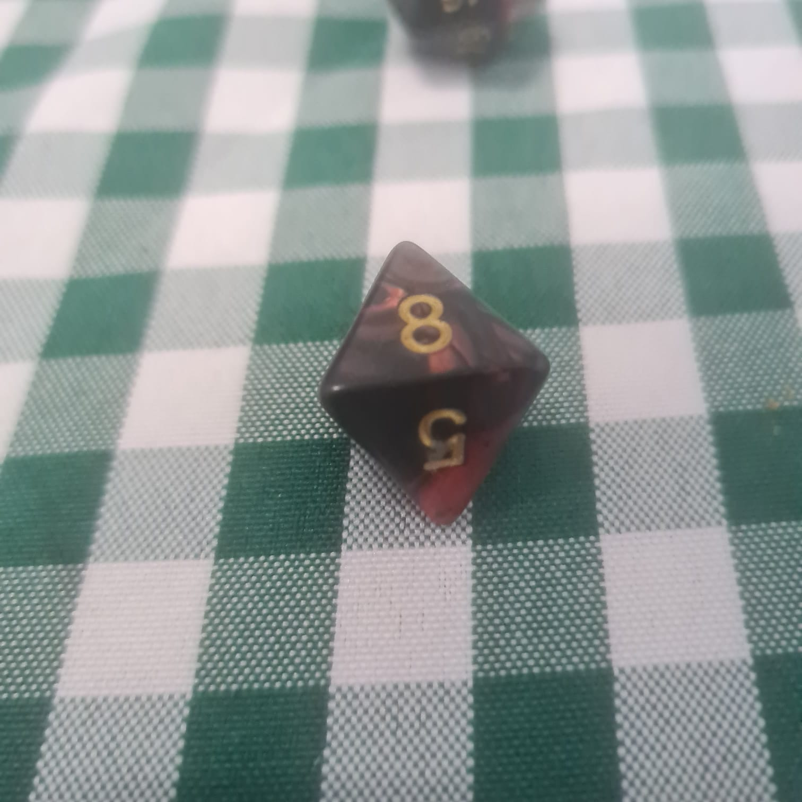

DADOS
╬╬═════════❮◆❯═════════╬╬
RPG dice are the most basic items for playing a game. The most basic and
common in RPG is to take the dice, make a roll and check if the result was a success or
a flaw, but after all, what is the importance of using this object? How and when to use them? He has
differences between the data or is everything the same? Check it out!
╬╬══════════════════════════❮◆❯═════════════════════════╬╬
Why is dice important in the game?
RPG dice are extremely important, after all, they are the ones who decide the effects of actions
of player characters and also NPCs in a fair and random way.
Every character action can lead to a situation where a dice roll is necessary to
determine whether it was successful or not, and that's where the power of data comes in. It's its randomness and
Impartial justice that gives brings fun and tension to the game.
How do RPG dice work?
Did you know that the function of the data changes according to each system? For following rules
specific, each system dictates how that data works, but the main function is to define the
success or failure of the test when added with the appropriate modifiers.
╬╬═════════❮◆❯═════════╬╬

Data D100
Widely used by Storytellers in tables that generate random encounters, items and situations,
also to define climate and temperature at the time of the narrative, undefined situations. Also
may include use to define damage percentages in massive building damage,
vessels, etc.
╬╬═════════❮◆❯═════════╬╬
D20 data:
Used as base data in d20 System games, where we can mention examples from D&D, Tormenta 20
and Pathfinder, the 20-sided RPG dice have a range of possibilities, both for hit
how many mistakes and this generates tension and climax in each play due to the great randomness
numeric.
╬╬═════════❮◆❯═════════╬╬
D12 data
This figurative die enters the d20 System through heavy martial blades, weapons powered by
gunpowder and magic tricks. The powerful attacks of the well-known Long Swords and Giant Ax
are classic examples of the use of this die, the highest weapon damage die that exists for this
system.
╬╬═════════❮◆❯═════════╬╬

D10 die
Used both as base data in systems such as Storyteller (from the Vampire Universe – The Masquerade,
Werewolf – The Apocalypse, among others), where you roll d10 to obtain a successful result.
But, it can also be used as a proxy data, which is used to calculate damage from
poisons, spells and martial weapons, as is done in the d20 System.
╬╬═════════❮◆❯═════════╬╬

D8 die
Normally, it is extra data for the system's base data, it is not part of the mechanics of the systems.
tests but rather the results generated after them, such as calculation of damage, loot found,
etc.
╬╬═════════❮◆❯═════════╬╬